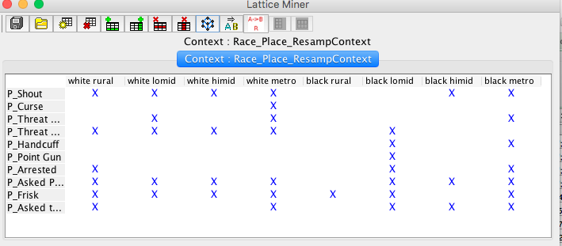
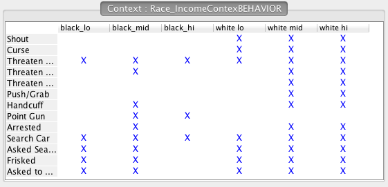
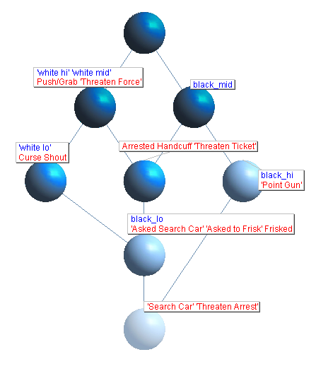

INTRODUCTION
Motivation
Since the fatal police shooting of 18-year-old Michael Brown in Ferguson, Missouri on August 9th, 2014, a slew of additional fatal police shootings of black men and women has generated numerous protests accusing law enforcement officers of excessive use of deadly force against unarmed African Americans. These series of highly publicized lethal interactions perpetrated by police on young black American men, and increasingly women and children, have galvanized a social justice movement. African American males between the ages of 15-34 make up only 2% of the US population yet a recently completed study shows that they have comprised more than 15% of all deaths logged in 2015 by an ongoing investigation into the use of deadly force by police. Their rate of police-involved deaths was five times higher than for white men of the same age [8]. According to mappingpoliceviolence.org, police killed at least 336 black people in the U.S. in 2015. The Federal Government does not collect, or require collection on any level, information concerning deadly use of force by police in the U.S.
Responding to police allegations compiled in [8], Associate professor of criminology at the University of Missouri-St. Louis David Klinger claims, “It would appear that police officers are often confronting people who are armed, non-compliant, and threatening.” Nevertheless, 14% of lethal events transpired after a traffic or street stop and 7% occurred after a non-violent crime. Only recently (July 1, 2015), the Washington Post began publishing a database of fatal police shootings [8].
This has generated the public’s hypervigilance of police-public interactions and has motivated investigating the presence of systematic racial bias on the part of law enforcement officers and its relationship to their behavior. If we trust the decals on the St. Louis iMetropolitan police vehicles, the general motto of law enforcement is, with some variation, “To Protect And Serve”. But what, exactly, does this mean, and how is “protection and service” perceived, understood, and manifested by both police officers and the public?
Question
The aforementioned events have generated official recordings of police accounts and allegations, and have lead some scholars to conclude that lethal force is often the response of law enforcement to armed, noncompliant, or threatening individuals. But what is the perception of the public? Is there discord between the idea of protection and service and the actual implementation of protection and service in our society? Digging a little deeper the more insidious underlying question emerges:
To what extent may systematic biases held by police officers inform their selection of protection and/or service actions?
And how is police behavior perceived and understood by the public they serve? Here we consider a system where the practices inhere from the beliefs of the individuals utilizing them. Beliefs and practices often occur in duality. An excellent, proven tool for exploring and illustrating the structure of relational meanings is Galois Lattice Analysis, a type of Formal Concept Analysis (FCA) (interested readers with little mathematical background are directed to a cogent general introduction in [6]; for a detailed, more formal treatment see [9] or [7]). In summary, the method considers discrete categories of actors and events and, by identifying shared elements and intersections, creates a hierarchy of partially ordered sets. This hierarchy illustrates and identifies structural relationships (“concepts”) between actors and events, among actors, and among events.
As mentioned in [7], Galois lattice’s special property, which makes it a useful tool for this study, is its ability to represent two orders of information in the same drawing such that every point contains information on both logical orders simultaneously, connecting them visually for a more informed understanding of the data.
METHODS
Data Source
To examine this idea we used raw data from the Police-Public Contact Survey (2011) conducted by the Bureau of Justice Statistics in 2011 [1]. This publication, a supplement to the National Crime Victimization Survey, examines nonfatal police/community relations. A representative national sample of U.S. residents aged 16 and over were asked about contacts with police during the twelve months prior to the survey date. The dataset contains over 62,000 individual cases and includes demographic data (race, sex, age, income, etc.) and 527 variables, with roughly half being about peoples’ interactions with police. For our project, we restricted our attention to data from the sixth survey: Police Behavior During Traffic and Street Stops (NCJ 242937), which covered police-citizen interactions and citizens’ perception of police.
Visualization of the Network
For Galois Lattice Analysis to work citizens must be classified into discrete, disjoint categories and police actions must be classified into clearly defined sets of attributes. To facilitate delimitation of these groups, we used the D3 JavaScript library [2] in our first network visualization to display the connections between citizen’s race and their treatment by police officers. The nodes are of two types, the public (categories of citizens) and the police officer behavior (e.g. ticketing for speeding, threatening arrest), resulting in a bipartite graph. Links are weighted by the frequency of occurrence in the sample. Network Visualization 1 is visualization of a pilot sample drawn from the Street Stop Variable “Reason for Stopping: Suspect You of Something” (data not shown - there were not enough data points per group (n=77) for any meaningful analysis). Because our data set is small, the network visualization did not illuminate novel strategies for categorizing the citizens or attributes beyond our initial impressions, nevertheless, this technique would be useful for clarifying relationships and delimiting sets in a dataset of much greater dimension and complexity.
D3JS Network Visualizations
Sampling Strategy
Galois lattice analysis requires a formal context, or representation of the data as intersecting sets of categories (e.g. white rural people) and attributes (e.g. reason for ticketing: speeding). A good context requires discrete categories into which each citizen can be uniquely placed. We designed two contexts (category/attribute combinations). For the first context (RACE_PLACE), citizens were categorized by race (black or white) and by the population size of their place of residence (rural: less than 100,000; low-mid: 100,000 to 499,999; hi-mid: 500,000 to 999,999; metro: 1 million or more) for a total of eight distinct categories. A D3JS visualization was also made for this sample, Network Visualization 2. For the second context, (RACE_INCOME) citizens were classified by race (white or black) and by income (lo: less than $20,000; mid: $20,000 to $49,999; hi: $50,000 or more) for a total of six distinct categories.
Sampling biases in the data set required that we determine the size of the smallest category and use that as the limiting sample size for the remaining categories of a context. In these cases, the least abundant categories were black people in high-mid population sized areas (n=581), and black people in the high-income group (n=1139), respectively. Random samples of the same size were extracted from the 2011 Traffic Stop Questionnaire for the remaining categories.
ANALYSIS AND RESULTS
Contexts
To create each context, the demographic categories were combined with an initial set of 72 attributes, including variables related to Reasons for Stopping (e.g. “seatbelt violation”), Reasons for Traffic Tickets (e.g. “speeding”), and Police Behavior (e.g. “threaten arrest”). Counts for each attribute were extracted from each sample category using [3] and [4] for place and income respectively, and summarized in a spreadsheet. We examined those data and removed all attributes that had a count of “0” for every category in that context (e.g. “reason for stopping: blocking traffic”). This reduced our working sample set of attributes.
We used the software LatticeMiner 1.4 [5], a data mining prototype for Formal Concept Analysis (FCA) that performs creation, visualization, and exploration of Galois lattices. To use LatticeMiner, the user creates a new context by transforming the extracted count data into a binary representation of presence or absence of an intersection between categories and attributes. The software generates a lattice representation of the context. Both the context and the display can be manipulated to explore relationships within the context.
For this analysis we chose to omit attributes detailing reasons for stopping or ticketing and focus on the ten (Race_Place) or fourteen (Race_Income) attributes defining a spectrum of officer behaviors varying in levels of displayed and/or perceived aggression, force, or emotional content (e.g. “asked permission to search car,” “shouting,” “cursing,” “threatening to arrest”). Figure A and B, pictured below, show the contexts for Race_Place and Race_Income respectively.
Figure A. Race_Place Context
Figure B. Race_Income Context
Galois Lattice and Visualization
.png)
Figure C. Race_Place Galois Lattice with reduced/minimal labelling, meaning "a category is labeled at its highest occurence, [and] a practice is labeled at its lowest occurence" [7].
Figure C displays the results of analyzing the Race_Place context. Nodes represent the intersection of categories and attributes and are referred to as a “concept” in the literature; the shading of the concepts, in this representation, indicates the abundance of attributes. The uppermost, unlabeled node is the set of all categories (eight demographic groups in this case); the lowest node is the set of all attributes (ten distinct police behaviors). These two nodes are “empty,” i.e. there were no instances in which every category intersected with every attribute (top), nor did every attribute intersect with every category (bottom). The lattice is a line diagram that joins concepts and can be organized to represent a hierarchy of sets of increasingly/decreasingly-shared attributes. The information from the context can be read from the line diagram following the “reading rule,” summarized as follows [6]:
An object g has an attribute m if and only if there is an upwards-leading path from the node (concept) named by “g” to the node named by “m.”
With eight categories and ten attributes, Figure C looks difficult to interpret, but one main result is that the attribute of “pointing a gun” is only associated with the category “black lo mid;” the take away message here is that in this data set, only black people from populations between 100,000-499,999 people reported having guns pointed at them. Figure D displays the lattice of the concept Race_Income; notice the reduction of two categories renders our task of reading easier. Starting at the bottom-most concept, which in this case, is not empty, we read up the line diagram from fewest-number of attributes to the most. Here we see that every category of person in this analysis reported having had their car searched and being subject to arrest threats. Moving up the diagram, two lines emerge from the basal concept, leading on the right to the first appearance of the attribute “Point Gun” in the “black high income” category. This attribute appears a second time in the concept above it, the “black mid income” category, and nowhere else on the line diagram.
Figure D. Race_Income Galois Lattice with reduced/minimal labelling
The consistency of this result with that of the RACE_PLACE context is tantalizing, and at the least, hints at directions for future work. Exploration of this topic was limited by time and by the characteristics of the data set, which was selected, but not designed, for this study. Among many of the shortcomings of this data set, it is only a (self) report of one side of the picture, the public. Including data from the perspective of the officers might flesh out a clearer yet more nuanced picture of the structural relationships between perceptions and behaviors of police and the public. It might be interesting to model a study following the example of [10], an approach to measuring and evaluating social meaning variables comprising qualitative interviews and correspondence analysis. One can only hope that this foray into Galois Lattice Analysis ignites a spark of interest in some ambitious graduate student adept at questionnaire design and ethnographic interviews.
References
[1] United States Department of Justice. Office of Justice Programs. Bureau of Justice Statistics. Police-Public Contact Survey, 2011. ICPSR34276-v1. Ann Arbor, MI: Inter-university Consortium for Political and Social Research [distributor], 2014-03-18. http://doi.org/10.3886/ICPSR34276.v1
[2] D3.js. D3JS.org
[3] place_cnt_ones.m
[4] income_cnt_ones.m
[5] LatticeMiner 1.4, Company: Laboratoire LARIM (http://larim.uqo.ca) Universite du Quebec en Outaouais (UQO) – Canada
[6] Wolff, K. E. (1993). A first course in formal concept analysis. StatSoft, 93, 429-438.
[7] Mohr, J. W., & Duquenne, V. (1997). The duality of culture and practice: Poverty relief in New York City, 1888--1917. Theory and society, 26(2), 305-356.
[8] Jon Swaine , Oliver Laughland, James Lartey, Ciara McCarthy / The Guardian January 2, 2016
[9] Freeman, L. C., & White, D. R. (1993). Using Galois lattices to represent network data. Sociological methodology, 23(127), U146.
[10] Harcourt, B. E. (2002). Measured interpretation: introducing the method of correspondence analysis to legal studies. U. Ill. L. Rev., 979.